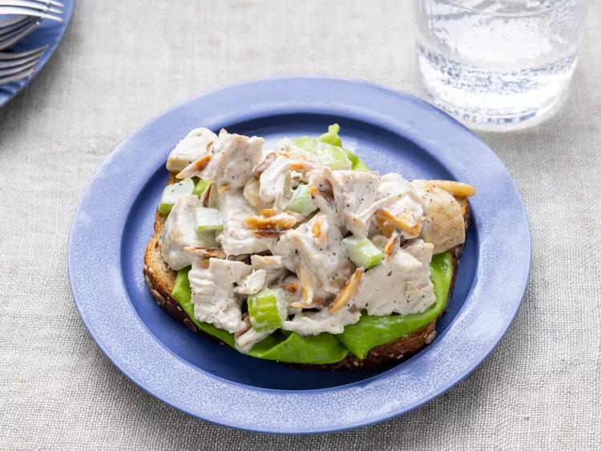

Honey BBQ Chicken Strip Sandwich

Description
Chicken salad is a versatile and refreshing dish perfect for any meal of the day.
This salad features tender, juicy pieces of cooked chicken breast mixed with crisp,
chopped celery, and nutty blanched slivered almonds, creating a delightful blend of textures and flavors.
The chicken is tossed in a creamy dressing made from mayonnaise, a hint of lemon juice, and seasoned with ground black pepper for a zesty finish.
Often served on a bed of fresh, crunchy lettuce or inside a soft, buttery croissant,
this chicken salad is both satisfying and light, making it an excellent choice for a quick lunch, a picnic, or a casual dinner.
Prep Time: 5 Mins
Cook Time: 5 mins
Additional Time: 5 mins
Total Time: 15 mins
Servings: 2
Ingredients
- ½ cup blanched slivered almonds
- ½ cup mayonnaise
- 1 tablespoon lemon juice
- ¼ teaspoon ground black pepper
- 2 cups chopped, cooked chicken meat
- 1 stalk celery, chopped
Nutrition
Calories: 779cal | Carbohydrates: 8g | Protein: 44g | Fat: 63g | Saturated Fat: 9g | Cholesterol: 126mg
Sodium: 409mg | Potassium 572mg | Fiber: 3g | Sugar: 2g | Calcium: 100mg | Iron: 3mg
Steps
Gather all your ingredients.
Place almonds in a frying pan. Toast over medium-high heat, shaking frequently. Watch carefully, as they burn easily.
Mix together mayonnaise, lemon juice, and pepper in a medium bowl.
Toss with chicken, toasted almonds, and celery.
Enjoy!